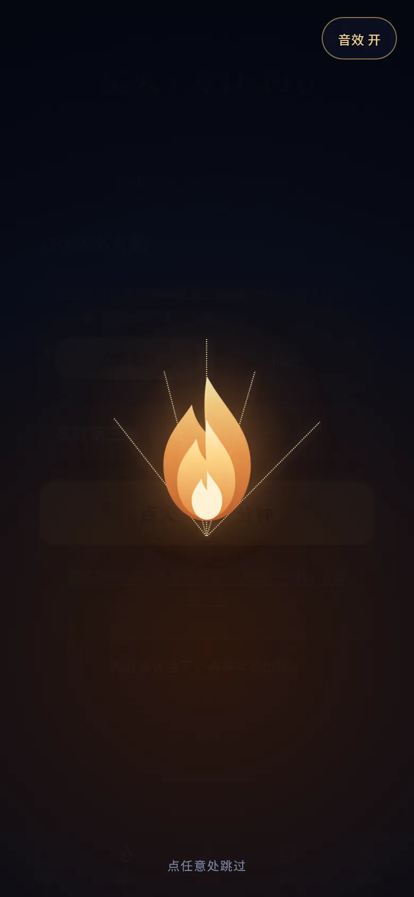
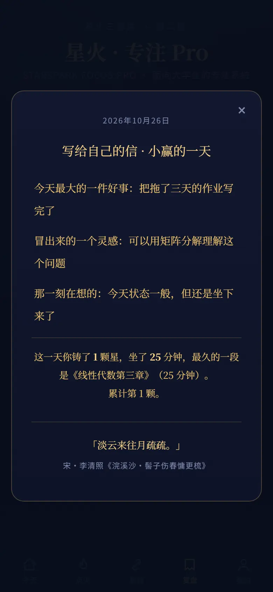
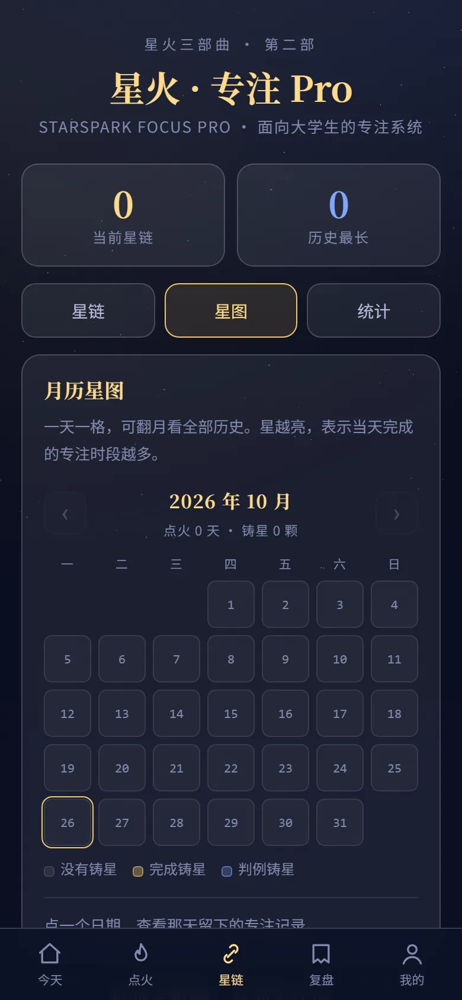

点火，铸一颗星
火种升起、火舌燃烧、星链从火心射出逐颗点亮、烟花绽放——四种合成音效串成一次点火。二十五分钟结束，星链上就多一颗星，屏幕下方升起一颗微型金星星。
愿我如星君如月，
夜夜流光相皎洁。
点一簇火，铸一颗星，写一封信——这就是星火专注 Pro 的全部。

火种升起、火舌燃烧、星链从火心射出逐颗点亮、烟花绽放——四种合成音效串成一次点火。二十五分钟结束，星链上就多一颗星，屏幕下方升起一颗微型金星星。

每天复盘写完，自动封存成一封信。全屏信纸里重读，钢琴声安静地放，信尾记着那一天的专注成绩——不是打卡，是给那天留个念。

一天一格，点亮的日子就是铸过星的日子。可以一直往前翻到第一颗星，每个月都记着「点火几天、铸星几颗」。链会断，但记录不会消失。
从「怎样开始」到「怎样继续」，每个环节都减少一次决策负担。
极简一键点火 25 分钟，或展开：立即开始、5 分钟热身、预约入座——先跨过启动阻力。
时间戳防漂移；有纪律暂停（15/30/60 分钟）保证回来；早停时断链或立为永久判例。
从专注小时走向长期生活条件；国策每守住一天向内生长（E1/E2），分叉越深约束越强。